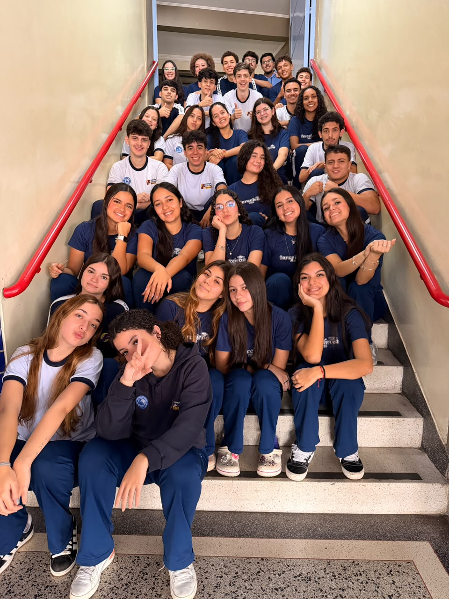
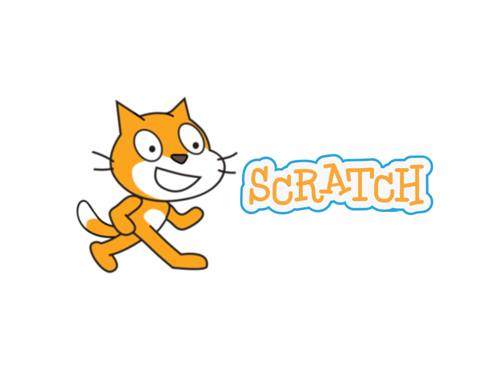

Somos o Colégio São Luiz – Unidade 3, uma instituição que busca incentivar o conhecimento, a criatividade e o desenvolvimento de novas habilidades por meio da educação.
Nossa página é dedicada ao Itinerário de Tecnologia da Informação, um espaço voltado à exploração do universo tecnológico, no qual os alunos têm a oportunidade de conhecer conceitos, desenvolver habilidades e colocar seus conhecimentos em prática.
Por meio de atividades, pesquisas e projetos, buscamos aproximar a tecnologia do cotidiano, explorando áreas como programação, desenvolvimento web, inovação e ferramentas digitais.
Mais do que aprender sobre tecnologia, nosso objetivo é estimular o pensamento lógico, a criatividade, a colaboração e a capacidade de transformar ideias em soluções.

A professora Rita Cassiano possui uma sólida trajetória acadêmica e profissional nas áreas de Tecnologia da Informação, Ciência da Computação e Matemática. É graduada em Ciência da Computação e Matemática, especialista em Computação pela Universidade Federal de São Carlos (UFSCar) e mestre em Ciência da Informação pela Universidade Estadual Paulista (UNESP).
Com mais de 10 anos de experiência na docência, atuou tanto no Ensino Superior quanto no Ensino Médio, lecionando disciplinas de Matemática e Programação. Sua formação também contempla Ciência de Dados e áreas correlatas, reunindo conhecimentos em diversas linguagens e tecnologias, como Python, SQL, R, C++ e Java.
Atualmente, integra a equipe docente do Colégio São Luiz – Unidade III, onde atua no Itinerário Formativo de Tecnologia da Informação, contribuindo para a formação dos estudantes e para o desenvolvimento de conhecimentos fundamentais em programação, raciocínio lógico e pensamento computacional, além de ser professora universitária da FMU.
Me chamo Gabriel Marques, sou estudante do Ensino Médio do Colégio São Luiz – Unidade III e entusiasta da Tecnologia da Informação, com interesse especial em programação, desenvolvimento de software.
Ao longo da minha trajetória acadêmica, venho desenvolvendo habilidades em lógica de programação e resolução de problemas, explorando linguagens como Python, C, HTML, CSS e JavaScript. Também busco ampliar meus conhecimentos por meio de estudos independentes, projetos práticos e desafios que estimulam o pensamento computacional.
Um dos destaques da minha trajetória foi a conquista do 3º lugar em uma competição nas áreas de Engenharia da Computação e Engenharia de Produção organizada pela faculdade ESEG, experiência essa que reforçou meu interesse pela tecnologia e pela aplicação prática do conhecimento.
Acredito que a tecnologia é uma ferramenta capaz de transformar ideias em soluções. Por isso, procuro constantemente aprender, experimentar e desenvolver projetos que conectem criatividade, lógica e inovação.

Conheça nossa trajetória e os conhecimentos desenvolvidos ao longo dos anos.
Primeiro contato com o universo da programação, utilizando o Scratch para desenvolver o raciocínio lógico e compreender conceitos fundamentais.
Scratch
Aprendizado dos fundamentos da linguagem C, além da utilização de ferramentas do Pacote Office para criação de documentos, planilhas e apresentações.
C • Word • Excel • PowerPoint
Aprofundamento na programação com Python, explorando também a robótica e a integração entre software e componentes físicos.
Python • Robótica
Desenvolvimento de páginas e projetos para a internet, utilizando linguagens e tecnologias fundamentais para a construção de sites.
HTML • CSS • JavaScript
Desenvolvimento de um chatbot utilizando Python.
Acessar projetoCriação de um sistema de boletim escolar utilizando lógica de programação.
Acessar projetoDesenvolvimento de um jogo inspirado no clássico Pong.
Acessar projetoCriação de um site interativo utilizando HTML, CSS e JavaScript.
Acessar projeto